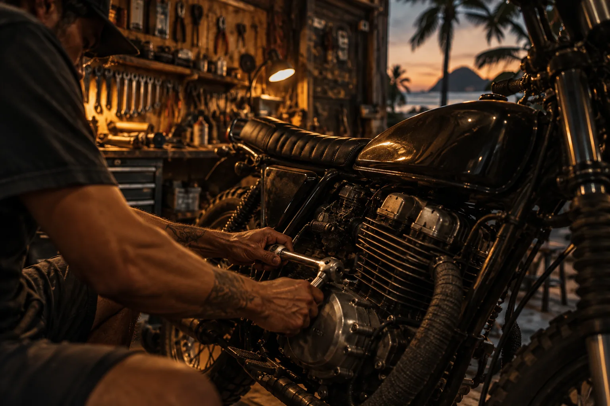

01 / NUESTROS SERVICIOS
Mantenimiento
y reparación.
Tu moto te lleva a todos lados. Aquí te ayudamos a que siga rodando, con atención directa y trato cercano.
- Mantenimiento general
- Cambio de aceite
- Frenos
- Suspensión
- Sistema eléctrico
- Diagnóstico
- Reparaciones especiales
* Servicios de referencia. Confirma disponibilidad y cotización directamente con el taller.

02 / CONTACTO
Visítanos en
Puerto Escondido.
¿Tienes dudas o necesitas una cotización?
Escríbenos, llámanos o visítanos.
TORRE FUERTEEL CAMINO CONTINÚA.